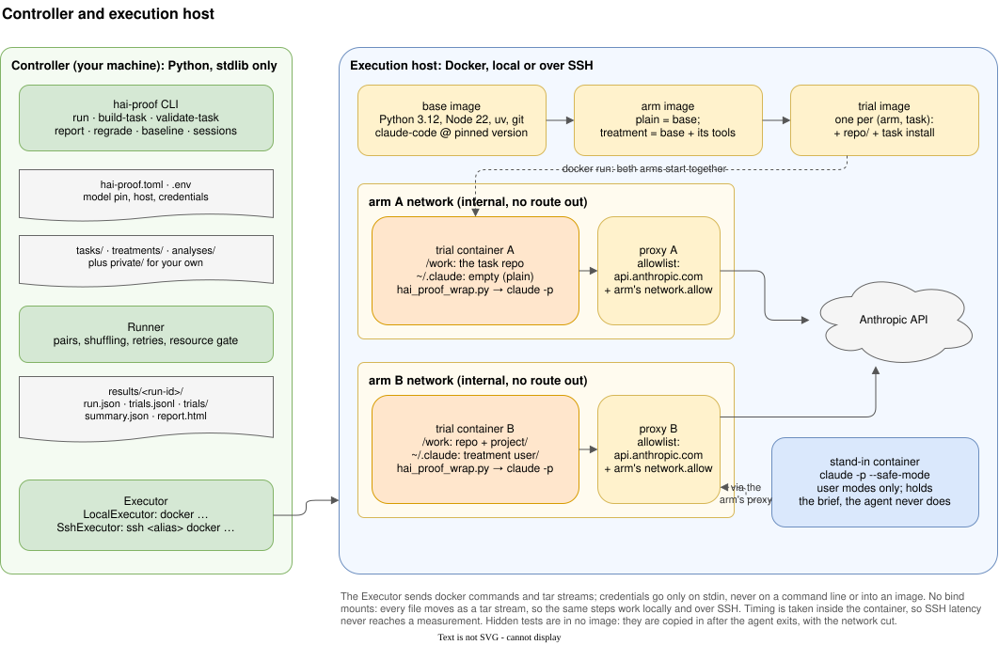
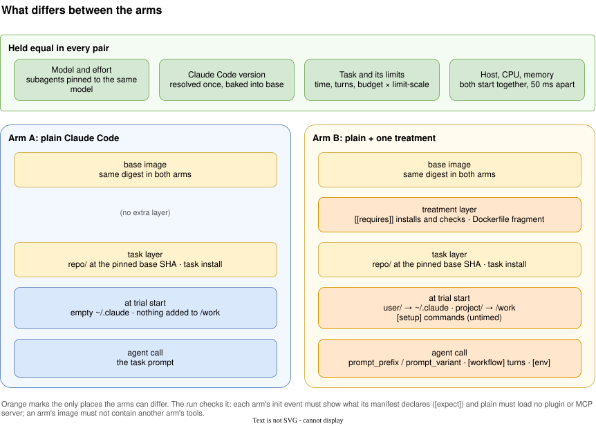
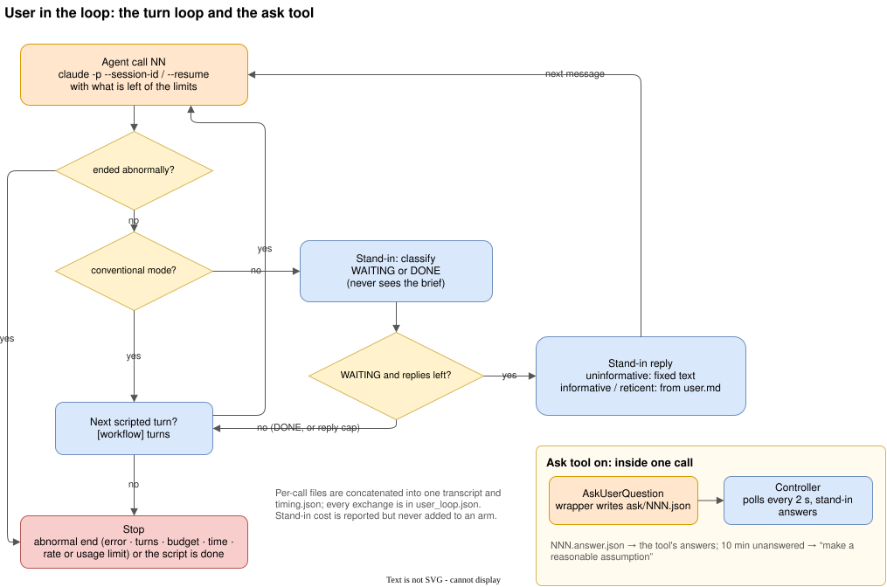

Design
How hai-proof makes a comparison fair, what a treatment can and cannot change, and how results are scored. The full specification, with section numbers, is DESIGN.md.
Principles
- The treatment is the only difference between the arms. The CLI binary, model, effort, flags, task,
image, resources and credentials are the same. "Plain" means a fresh, empty config directory, not
--bareor--safe-mode, which change behaviour beyond removing customisations. - Install treatments the way developers do. A bundle is copied into the places Claude Code already
reads (
~/.claude/, the repo'sCLAUDE.md,.claude/,.mcp.json), not translated into flags. - Verify isolation; don't assume it. Every trial's
system/initevent is checked: plain must load no plugin or MCP server, and a treatment must load what it declares. - Hidden tests, graded outside the agent. The agent never sees the tests that decide success. They are copied in after it exits, with the network cut.
- Paired and interleaved. Both arms of a pair run the same task at the same time on the same host, so API latency drift and time-of-day effects cancel.
- Few tasks, repeated. Run-to-run variance is large (a geometric SD of about ×1.34 in tokens for the same task), so a dozen tasks run five times beat a hundred run once.
Controller and execution host
The machine you run hai-proof on, often a laptop with no container engine, is the controller. It plans
the run, schedules pairs, parses transcripts and writes the report. It is pure Python standard library. The
execution host runs the containers: the local Docker, or any host in ~/.ssh/config reachable with
key or agent auth.

- One transport. Every container operation goes through an
Executor:docker …locally, orssh <alias> docker …withBatchMode=yes. Files move as tar streams; there are no bind mounts, so the same steps work on either. - Timing next to the process. An in-container wrapper records monotonic start and end times and stops the agent at its limit. Trials run detached, so a dropped SSH link loses nothing and never adds latency to a measurement.
- Credentials. An API key or a subscription OAuth token reaches a container only on stdin
(
--env-file /dev/stdin), never on a command line or in an image layer. Saved transcripts and Claude Code records are scrubbed of every known secret. - Egress allowlist. Each arm gets an internal Docker network with no route out, plus a proxy sidecar
that passes only
api.anthropic.comand the treatment's declared hosts. The agent cannot fetch the upstream fix of the bug it is working on; a transcript that mentions the fix's repo URL or commit is excluded anyway. - Several runs at once. Runs carry their id in every container and network name; images are tagged by content hash and shared; lock files keep two controllers off one run, one task rebuild or one baseline file.
Arms and run shapes
An arm is a label bound to a configuration: plain or a treatment directory. A run has one or
two arms; arm A is the reference for every ratio.
| Shape | Command | Arm A | Arm B | Reports |
|---|---|---|---|---|
| Comparative (default) | --treatment X | plain | X | B − A pass rates, B ÷ A ratios |
| A/B | --arm-a X --arm-b Y | X | Y | the same, saying nothing about plain |
| A/A calibration | --arm-a plain --arm-b plain | plain | plain | the noise floor; should show no difference |
| Single arm | --treatment X --no-control | — | X | absolute metrics only |

Subagents run on the pinned model too (CLAUDE_CODE_SUBAGENT_MODEL), so a treatment cannot quietly
change the model by delegating. Each arm may also set its own user mode or ask-tool mode (below), but a
comparison should change one thing at a time.
Images
- base:
python:3.12-slim-bookwormwith git, gcc, Node 22, uv and@anthropic-ai/claude-codeat a pinned version (resolved once per run), a non-rootagentuser, auto-update, telemetry and auto-memory off, and the two in-container scripts (wrapper and grader). - arm: the base itself for plain; for a treatment, the base plus each
[[requires]]install and check, and its Dockerfile fragment. Tools are installed at build time, never during a trial. - trial, one per (arm, task): the arm image plus the task's own toolchain steps, its repository at the pinned commit, and its install command. Hidden tests are never in an image.
Treatments
A treatment is a directory under treatments/ (or your gitignored private/treatments/):
| Part | What it does |
|---|---|
user/ | copied into the agent's ~/.claude: CLAUDE.md, skills, agents, commands, hooks, settings, vendored plugins |
project/ | overlaid onto the repository before the start-state commit: CLAUDE.md, .claude/, .mcp.json |
Dockerfile | optional extra image layer (no FROM), arm B only |
[[requires]] | external CLIs with pinned install and check lines; the run checks they're absent from other arms and reports whether the agent used them |
[setup] | commands run in the workspace before the clock starts (e.g. openspec init); artifacts they write aren't counted as code changes |
prompt_prefix, prompt_variant | text put before every task prompt, or a per-task alternative prompt file (prompt-quality experiments) |
[workflow] turns | scripted user messages, e.g. ["/opsx:propose {task_prompt}", "/opsx:apply"] |
[env], [network] allow | extra environment and extra egress hosts |
[expect] | plugins, MCP servers and skills that must load; trials where they don't are excluded |
Plugins are vendored at an exact version into a local marketplace inside user/; a trial never
fetches anything. The repository ships treatments for a plugin with one subagent (code-simplifier), large plugin
toolkits (spartan, superpowers, ponytail), a CLI-driven workflow (openspec) and two short CLAUDE.md files that
teach interviewing (interview-guide, interview-catchall).
User in the loop
A plain claude -p run has nobody to answer: a question ends the session and the work is graded as
it stands. Many real workflows stop to ask, and some treatments exist precisely to ask better questions. hai-proof
can put a user stand-in between turns, per arm:
| Mode | When the agent is waiting |
|---|---|
conventional (default) | nobody answers; scripted turns are sent in order |
uninformative | always "I don't have anything to add. Use your best judgement and continue." |
informative | answers from the task's user.md brief, correcting plans against the whole brief |
reticent | the same brief, but answers only what the agent asks or states and never volunteers the rest |

- The stand-in is a separate
claude -p --safe-modecall with no tools, in its own container. The agent's container never holds the brief, and the WAITING/DONE decision never sees it. - It answers only from the brief, never about the code's correctness, and never moves the workflow forward.
Replies per trial are capped (
--max-user-replies). Its cost is reported but never added to an arm. - The ask tool.
claude -palone never offers AskUserQuestion, which interactive Claude Code has.--ask-tool onruns each call in the Agent SDK's stream-json stdio mode, which does; the wrapper relays each question through a file mailbox to the controller and the stand-in.--ask-tool hiddenis the same mode without the tool, its control. - Reticent tasks can fix their own stand-in settings (
reticence = "strict", which filters replies that raise points the agent didn't;tool_answers = "full"). They are part of the task's hash.
Metrics
| Metric | Source |
|---|---|
success | hidden acceptance tests pass and the project's own suite still passes |
wall_s | the in-container wrapper, monotonic, process start to exit |
cost_usd, tokens by type | the result event, summed over modelUsage so subagents count; from Claude Code's session records if a time limit cut the session |
| turns, tool calls, subagent calls, skills fired | the stream-json transcript |
diff_breakdown | changed lines by category: product code, tests, docs, planning, config, treatment artifacts |
init_snapshot | tools, plugins, MCP servers and model from the init event, for the isolation check |
| context tax | a probe session per arm ("Reply with the single word OK."): the treatment's fixed overhead per session |
Statistics
- pass@1 per arm: the share of a task's runs that pass, averaged over tasks (each task weighted equally). pass@k (k = reps) uses the unbiased estimate 1 − C(n−c, k)/C(n, k).
- B vs A pass rate: the difference in points with a 95% two-level bootstrap interval (tasks resampled, then each task's runs), the number of tasks each arm wins, and an exact sign-test p.
- Cost, tokens, wall time: the geometric-mean ratio B ÷ A of paired runs, with a cluster-bootstrap 95% interval and a Wilcoxon signed-rank p over per-task median log ratios.
- Calibration. An A/A run on the standard suite (Sonnet, five reps) is what "no difference" is measured against: this suite detects about a 15-point pass@1 gap, or a cost or time ratio outside roughly ×0.85–×1.2. A new suite needs its own A/A run.
- Disagreements stay visible. Per-task pass counts are never averaged away; tasks where the arms differ get their own section with links to both transcripts.
- Baselines. Plain-arm trials with nobody in the loop are added to each task's
baseline.json, keyed by model, CLI version, effort, limit scale and task hash, for expected values over time.
Threats to validity
| Threat | Mitigation |
|---|---|
Plain picks up someone's ~/.claude or connectors | empty HOME and config dir in a container; the init-event check; the A/A run |
| Model or CLI drift during a run | model and CLI pinned and recorded; non-essential traffic off |
| Prompt-cache warmth favours one arm | concurrent pairs, a warm-up pair, cache tokens reported separately |
| Test leakage or fetching the upstream fix | hidden tests copied in only after the agent exits; no fix in git history; egress allowlist; transcript scan |
| Rate limits hit one arm | the whole pair is discarded and rerun |
| A treatment that never fires is called useless | dependency_used, skills and subagent counts show whether it acted at all |
| Graded on unfinished work | user-in-the-loop modes for workflows that ask; calls wait for background subagents to finish |
| Public repos are in training data | affects both arms equally; post-cutoff fixes and injected bugs preferred |
| Results others can't reproduce | tasks pinned by commit SHA and dependency versions; reports record CLI, model, image and treatment hashes |